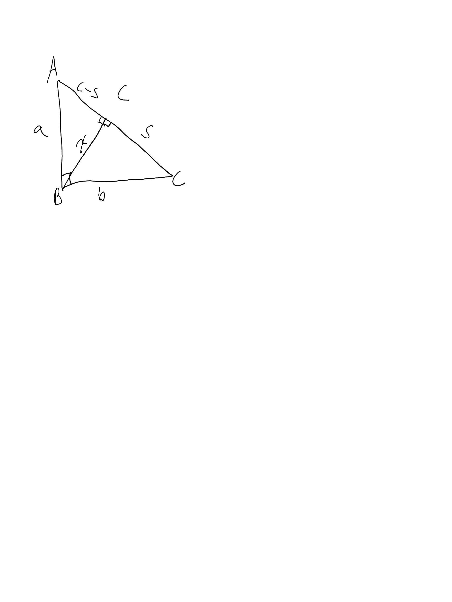

home
Sum of Spreads In a Right Triangle
In rational trigonometry, the spread between two lines takes the place of the notion of an angle in the usual or real-numbered trigonometry. We can define the spread between two lines thus: Let lines AB and CB be two lines which intersect at B. From some point D on AB draw a line to E on CB, such that DE is perpendicular to CB. Then `(BD^2)/(BE^2)` is the spread between AB and CB.

For example, suppose the diagram above gives a 3,4,5 triangle, such that
`a=3`
`b=4`
`c=5`
Then, `sBAC = x^2/a^2` and `sACB = x^2/b^2`
Now, we have `x^2 + (c-s)^2 = a^2` and `x^2 + s^2 = b^2`
Since `b>a` we can subtract the latter from the former, getting
`s^2 - (c-s)^2 = b^2-a^2`, or
`2cs -s^2 = 7`
Again, we know that `c=5`, so
`10s = 32`
`s = 32/10`
again, since `b=4`
`x^2 + 1024/100 = 16`, `x^2 = 576/100 = 144/25`
therefore, `sBAC = 144/225` and `sACB = 144/400`
Interestingly, these sum to 1. The question naturally arises, do these two spreads in a right triangle always sum to 1? They do.
Recall that `sBAC = x^2/a^2` and `sACB = x^2/b^2`, and therefore `sBAC + sACB = (a^2x^2 + b^2x^2)/(a^2b^2)`
therefore `sBAC + sACB = (x^2(a^2+b^2))/(a^2b^2) = (x^2c^2)/(a^2b^2)`
Then `sBAC + sACB = 1` iff `(x^2c^2) = (a^2b^2)`
Now `x^2 + (c-s)^2 = a^2`
`x^2 + s^2 = b^2`
`(c-s)^2 - b^2 = a^2 - b^2`
`c^2 - 2sc = a^2 - b^2`
`a^2 + b^2 - 2sc = a^2 - b^2`
`-2sc = -2b^2`
`-sc = -b^2`
`sc = b^2`
`s = b^2/c`
Then, having found s, and recalling `x^2 + s^2 = b^2`
`x^2 + (b^2/c)^2 = b^2`
`x^2 + b^4/c^2 = b^2`
`x^2 = b^2 - b^4/c^2`
`x^2 = (b^2c^2 - b^4)/(c^2)`
`x^2 = (b^2(c^2-b^2))/c^2`
`x^2 = (b^2(a^2+b^2-b^2))/c^2`
`x^2 = (b^2a^2)/c^2`
and multiplying both sides by `c^2` gives
`x^2c^2 = b^2a^2`, as required.